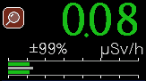
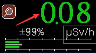

西弗（希沃特）
希沃特（英文Sievert，缩写Sv）是一个国际单位制导出单位，为物理量计量当量的单位，用来衡量辐射对生物组织的伤害。
1SV(西弗)＝1000mSV(毫西弗)
1mSV(毫西弗)等于1000μSv(微西弗)有关希沃特我将在下面演示
背景辐射（英语：background radiation），又称本底辐射，是在环境中持续存在，可以是源自人为排放或自然存在的辐射通常不会超过0.5μSv/hr；
1μSv=1000nSv、1mSV=1000μSv、1Sv=1000mSV
伦琴
伦琴不是国际通行的计量单位，伦琴是放射性物质产生的照射量的一个单位。
英文代号为R，其定义是在0摄氏度，760毫米汞柱气压的1立方厘米空气中造成1静电单位（3.3364×10−10库仑）正负离子的辐射强度=1伦琴单位。伦琴单位不是国际单位，但在医学等方面还是很常用。与国际单位的换算是1伦琴单位=2.58×10-4库仑/千克。
一般用来衡量X射线和γ射线的强度。用伦琴单位衡量其他形式的辐射（例如α粒子）时可以乘上一个表示生物影响性能的Q因子。 以上两种单位通常作为各类辐射探测仪的单位 放射性核素的活度 (A) 以贝克勒 (Bq) 为单位测量，1 Bq 对应于每秒 1 次衰变。为了表示高活性，还使用了系统外单位——居里 (Ci)，1 居里等于 370 亿贝克勒尔。 此页只讲最常见的几种其他更多请自行查阅
1伦琴等于1000毫伦琴 1毫伦琴等于1000微伦琴；1R≈10mSv 1mR≈10uSv 1uR≈0.01uSv
*备注：居里【Ci】和伦琴【R】已是旧单位物理单位和名词解释：电子伏特（eV）：是一个能量单位，等效于一个电子在真空中通过 1 伏特电位差所产生的动能;
1MeV=1000KeV=1000000eV 电子伏与SI制的能量单位焦耳（J）的换算关系是：1 eV = 1.602176634×10−19 J
贝克勒尔（法语：Becquerel，符号为：Bq），简称贝克。是放射性活度的国际单位制导出单位，用于衡量放射性物质或放射源的计量单位。若每秒有一个原子衰变，则这些放射性物质的活度是1贝克勒尔，这是个很小的单位，常用 的有：
1TBq=1000GBq=1000000MBq 1 GBq = 0.0270 Ci 1 Bq = 2.70×10−11 Ci
居里（Ci）：是放射性活度的旧计量单位，定义是1g镭-226的放射性活度，例如，1克的镭226每秒能产生3.7×1010次原子核衰变，该源的放射性强度即为1居里。是一个很大的单位,可以与贝克勒尔换算 目前，该单位已经被贝可勒尔替换。
1 μCi = 37,000 Bq 1 Ci = 37 GBq
不是所有的辐射仪器都叫盖革计数器
我该怎么看盖革计数器的仪表盘，如何认识它？
如下图所示，这是一个仪表盘

上面的东西都代表什么呢？我将讲解最重要的两个地方，其他地方不同机型大同小异或者干脆没有

如图标记"0.08"代表当前传感器测量到当前辐射值为"0.08"
如图标记"μSv"代表当前机型设置的仪表盘单位为"μSv"后面的/h代表每小时
连起来就是当前测得的剂量为0.08μSv每小时
这个点很重要，μSv/h指的是每小时探测器接收到的剂量，不代表你一下子受到这么多剂量